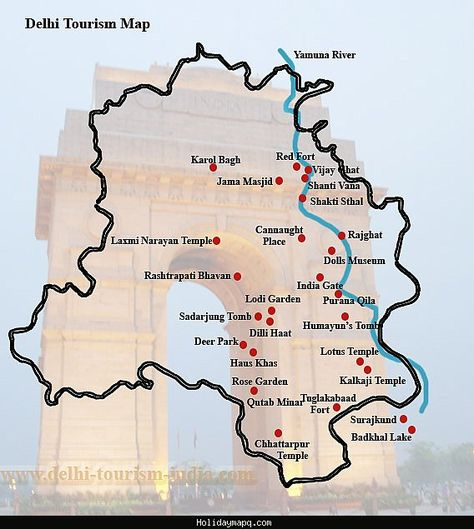

LET'S HAVE A LOOK AT THE TOUR MAP
BACK

WHERE TO VISIT , WHAT TO SEE?
SOME HOT PICKS(#HAVE_TO_VISIT)
- TAJ MAHAL - ONE OF THE SEVEN WONDERS OF THE WORLD
- FATEHPUR SIKRI
- GURGAON - FAST GROWING CITY NEAR DWARKA(NEW DELHI)
- KURUKSHETRA - SITE OF THE EPIC BATTLE OF KURUKSHETRA
- PANCHKULA (HARYANA) - PEACOCK PALACE
- FARIDABAD (HARYANA) - HARYANA'S LARGEST CITY AND MAJOR INDUSTRIAL HUB
- PANIPAT (HARYANA) - SITE OF BATTLE OF PANIPAT, FORTS , MONUMENTS
- NARNAUL (HARYANA) - IMPORTANT SEAT OF DWAPAR YUGA OF MAHABHARATA
- NUH - ROOTS TO THE ARYAN CIVILIZATION AND LATER THE TUGHLAQ DYNASTY
- ROHTAK - PART OF NCR(NATIONAL CAPITAL REGION)
- SULTANPUR BIRD SANCTUARY
- DAMDAMA LAKE - COMMISSIONED BY THE BRITISH IN 1947 FOR RAIN WATER HARVESTING (HARYANA)
- KALESAR NATIONAL PARK - PROTECTED AREA FOR ELEPHANTS, LEOPARDS , PANTHERSYAMUNA NAGAR (HARYANA)
- RED FORT - MUSEUM, MADE OF RED STONE(SYMBOLIZES MUGHAL RULE)
- HUMAYUN'S TOMB - MONUMENT BUILT BY QUEEN HAJI BEGUM(PERSIAN ARCHITECTURE)
- QUTAB MINAR - COMMEMORATES VICTORY AND BEGINING OF MUGHAL ERA IN INDIA.
- LOTUS TEMPLE - SYMBOLIZES 4 RELIGIONS HINDUISM, ISLAM , BUDDHISM , JAINISM
- AKSHARDHAM TEMPLE - WORLD'S LARGEST HINDU TEMPLE
- INDIA GATE - WAR MEMORIAL FOR THE SOLDIERS KILLED DURING FIRST WORLD WAR(NAMES INSCRIBED IN THE WALLS)
- JAMA MASJID - RED SANDSTONE AND WHITE MARBEL MONUMENT BY SHAH JAHAN
- NATIONAL MUSEUM - HARAPPAN CIVILIZATION TO BRITISH COLONIAL ERA
OTHER ATTRACTIONS
- KARNAL - HISTORICAL CHARM OF THE MAHABHARATA
- LODI GARDENS - 90 ACRE GARDEN BUILT BY THE BRITISH AROUND THE TOMBS OF RULERS OF 15TH AND 16TH CENTURY
- CHANDI CHOWK - INDIA'S LARGEST AND OLDEST MARKET
- TUGHLAQABAD FORT - RUINS OF THE HISTORICAL PERIOD
- NIZAMUDDIN DARGAH - DEDICATED TO SUFI SAINT, KHWAJA NIZAMUDDIN AULIYA
- SAFDARJUNG'S TOMB - LAST EXAMPLE OF MUGHAL MONUMENTAL TOMB